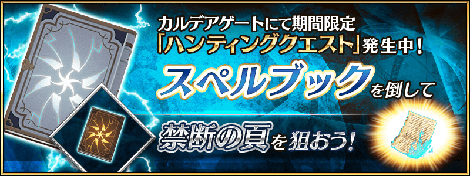

舉辦容易取得特定技能強化＆靈基再臨素材的關卡「狩獵關卡」！
舉辦期間中，特定敵人做為對象的狩獵關卡會依序在迦勒底之門出現。
在狩獵關卡，有準備包含從上次登場的最上位關卡「典位+級」共4階段難易度，在各自的期間內皆能無數次挑戰。
另外，在初次通過時可獲得魔力稜鏡做為關卡通過報酬。
挑戰關卡以獲得技能強化＆靈基再臨素材做為目標吧！
◆舉辦期間◆
2021年4月7日(三) 17:00～4月14日(三) 11:59
◆參加條件◆
所有的御主對象
※新御主玩家必須推進至通過「特異點F 炎上汙染都市 冬木 第3節」。
◆有關從者真名的注意◆
在2018年12月31日(二) 23:00以後新配信的主線故事及期間限定活動、一部份關卡、宣傳活動及召喚中，會顯示隱藏真名的對象從者真名。
※2018年12月31日(一) 22:59前已經配信的主線故事、復刻活動、一部份關卡中不在此限。
4月7日(三) 17:00～4月8日(四) 16:59
4月8日(四) 17:00～4月9日(五) 16:59

4月9日(五) 17:00～4月10日(六) 16:59
4月10日(六) 17:00～4月11日(日) 16:59
4月11日(日) 17:00～4月12日(一) 16:59

4月12日(一) 17:00～4月14日(三) 11:59
下述的期間中，在「御主任務」的「限定」標籤內以期間限定追加「【狩獵關卡 第10彈】限定任務」。
通過所有任務的話，可得到黃金果實3個、白銀果實3個！
◆舉辦期間◆
2021年4月7日(三) 17:00～4月14日(三) 11:59
◆領取期間◆
2021年4月7日(三) 17:00～4月21日(三) 11:59
◆追加任務◆
| 任務開放時間 | 任務名稱 | 任務達成報酬 | |
|---|---|---|---|
| 4月7日(三) 17:00 | 通過1次在4/7(三) 17:00～4/8(四) 16:59出現的任意狩獵關卡 |

|
白銀果實 1個 |
| 4月8日(四) 17:00 | 通過1次在4/8(四) 17:00～4/9(五) 16:59出現的任意狩獵關卡 |
|
白銀果實 1個 |
| 4月9日(五) 17:00 | 通過1次在4/9(五) 17:00～4/10(六) 16:59出現的任意狩獵關卡 |
|
白銀果實 1個 |
| 4月10日(六) 17:00 | 通過1次在4/10(六) 17:00～4/11(日) 16:59出現的任意狩獵關卡 |

|
黃金果實 1個 |
| 4月11日(日) 17:00 | 通過1次在4/11(日) 17:00～4/12(一) 16:59出現的任意狩獵關卡 |
|
黃金果實 1個 |
| 4月12日(一) 17:00 | 通過1次在4/12(一) 17:00～4/14(三) 11:59出現的任意狩獵關卡 |
|
黃金果實 1個 |
※請注意舉辦期間與領取期間有所差異。 ※請注意與每週日23:00更新的普通任務(Weekly)不同欄位，超過領取期間的話無法入手報酬。 ※就算達成「【狩獵關卡 第10彈】限定任務」，也不會計算在普通任務(Weekly)的任務進行度。 ※請注意「【狩獵關卡 第10彈】限定任務」超過任務期限就無法達成。
下述的期間中，在強化於期間限定「春爛漫Pick Up召喚(每日交替)」Pick Up的4位的者時，大成功(經驗值2倍加成)・極大成功(經驗值3倍加成)的發生率以期間限定變成2倍！
請務必藉此機會強化對象從者吧！
◆舉辦期間◆
2021年4月7日(三) 17:00～4月14日(三) 11:59
◆對象從者◆
| 職階 | 稀有度 | 從者名 |
|---|---|---|
| Lancer | ★★★ | 寶藏院胤舜 |
| Caster | ★★★★★ | 玉藻前 |
| Assassin | ★★★★ | 望月千代女(Assassin・樂園) |
| Foreigner | ★★★★★ | 葛飾北齋 |
『「葛飾北齋體驗關卡」開放權』在達文西工房的「稀有稜鏡交換」永久追加！
用稀有稜鏡1個交換後，會開放上述體驗關卡。
◆追加時間◆
2021年4月7日(三) 17:00～
◆追加道具(永久)◆
葛飾北齋體驗關卡
| 追加道具 | 能交換次數 | 1次交換所需的 稀有稜鏡數 |
|---|---|---|
| 葛飾北齋體驗關卡 | 1次 | 1個 |
※在「稀有稜鏡交換」追加的『「葛飾北齋體驗關卡」開放權』為永久，沒有交換期限。 ※請注意有通過1次「葛飾北齋體驗關卡」的情況，就無法交換。
強化「★5(SSR)葛飾北齋(Foreigner)」「★4(SR)望月千代女(Assassin・樂園)」的特別關卡「從者強化關卡」，在迦勒底之門永久追加。
不僅進行對象從者的強化，也可獲得聖晶石做為關卡通過報酬。
※請注意在從者強化關卡沒有文字冒險部份。
◆追加時間◆
2021年4月7日(三) 17:00～
◆開放條件◆
持有的強化對象從者，必須使其最終再臨。
另外，關於一部份份的從者必須使其真名判明。
※未持有對象從者的話，不會出現關卡。
※關卡沒有舉辦期限。
其他還有，期間限定「春爛漫Pick Up召喚(每日交替)」同時舉辦！
關於詳情，請自下述橫幅確認。
■「春爛漫Pick Up召喚(每日交替)」詳細情報